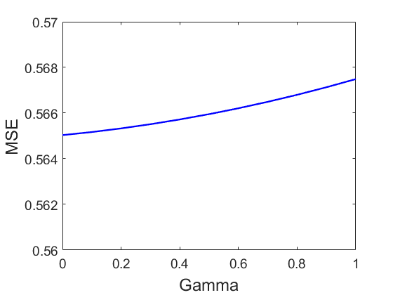
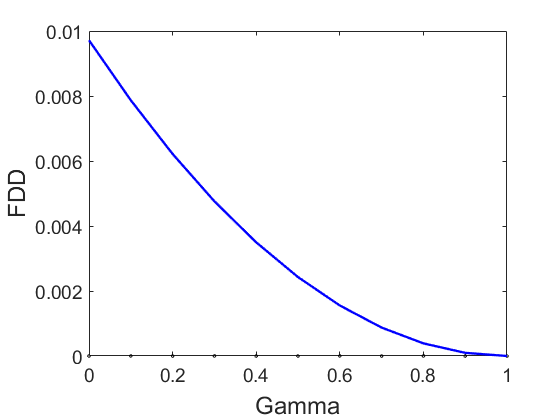
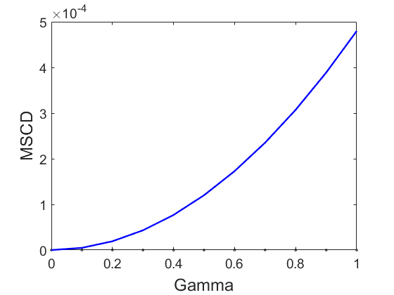
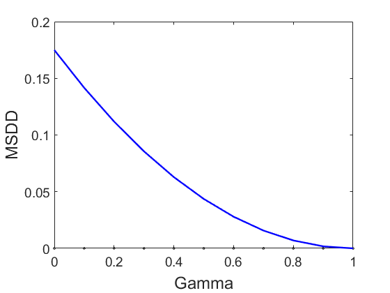

Third example: continuum between ARDICO and ACORDI. Arteaga et al. Solving the Puzzle
simulation of multivariate data with control over the structure of columns and rows using two-sided orthogonal Procrustes.
Dependencies:
- MEDA Toolbox v1.7 at https://github.com/codaslab/MEDA-Toolbox
designed by: Fransciso Arteaga (francisco.arteaga@ucv.es)
coded by: Jose Camacho (josecamacho@ugr.es)
last modification: 25/Mar/2025
Copyright (C) 2024
This program is free software: you can redistribute it and/or modify it under the terms of the GNU General Public License as published by the Free Software Foundation, either version 3 of the License, or (at your option) any later version.
This program is distributed in the hope that it will be useful, but WITHOUT ANY WARRANTY; without even the implied warranty of MERCHANTABILITY or FITNESS FOR A PARTICULAR PURPOSE. See the GNU General Public License for more details.
You should have received a copy of the GNU General Public License along with this program. If not, see http://www.gnu.org/licenses/.
Contents
Example matrix
clear
close all
clc
Y = [0.706 1.765 -1.267 -0.217 -0.121
1.347 0.711 0.586 1.524 1.280
-0.707 0.267 -0.325 -0.862 -1.504
-0.227 0.644 0.490 0.323 0.179
-0.577 -0.850 -0.064 -1.455 -1.037
0.532 0.156 -0.380 0.074 1.521
1.442 0.631 -1.220 0.574 -1.135
0.067 -1.047 -0.188 0.071 0.216
-1.063 -0.964 2.239 -1.305 0.574
-1.519 -1.312 0.129 1.274 0.026]
C = [1.0 0.6 0.1 0.4 -0.3
0.6 1.0 -0.4 0.0 -0.6
0.1 -0.4 1.0 0.1 0.6
0.4 0.0 0.1 1.0 0.1
-0.3 -0.6 0.6 0.1 1.0]
Y =
0.7060 1.7650 -1.2670 -0.2170 -0.1210
1.3470 0.7110 0.5860 1.5240 1.2800
-0.7070 0.2670 -0.3250 -0.8620 -1.5040
-0.2270 0.6440 0.4900 0.3230 0.1790
-0.5770 -0.8500 -0.0640 -1.4550 -1.0370
0.5320 0.1560 -0.3800 0.0740 1.5210
1.4420 0.6310 -1.2200 0.5740 -1.1350
0.0670 -1.0470 -0.1880 0.0710 0.2160
-1.0630 -0.9640 2.2390 -1.3050 0.5740
-1.5190 -1.3120 0.1290 1.2740 0.0260
C =
1.0000 0.6000 0.1000 0.4000 -0.3000
0.6000 1.0000 -0.4000 0 -0.6000
0.1000 -0.4000 1.0000 0.1000 0.6000
0.4000 0 0.1000 1.0000 0.1000
-0.3000 -0.6000 0.6000 0.1000 1.0000
Continuum for 0.25 and 0.75
X025 = afamily(C,Y,'Method','Continuum','Gamma',0.25) X075 = afamily(C,Y,'Method','Continuum','Gamma',0.75)
Method is Continuum for Gamma = 2.500000e-01
X025 =
0.0543 1.6725 -0.6135 -0.8000 -1.1717
2.0971 0.9921 0.0421 1.0569 -0.1091
-1.2894 -0.1271 -0.7323 -1.1710 0.2944
0.2498 0.6538 0.0357 0.0736 0.6353
-1.2077 -1.2083 0.1366 -1.1349 0.0696
0.6888 0.5055 0.9697 0.5659 -0.8698
0.4270 0.4297 -1.7856 -0.3744 -1.3231
-0.0667 -0.8933 0.2142 0.5332 -0.3684
-0.0520 -1.1748 1.9557 -0.5964 1.8816
-0.9004 -0.8492 -0.2241 1.8469 0.9611
Method is Continuum for Gamma = 7.500000e-01
X075 =
0.0251 1.6901 -0.6080 -0.7764 -1.1915
2.1242 0.9737 0.0275 1.0550 -0.1112
-1.2951 -0.1358 -0.7275 -1.1723 0.2819
0.2461 0.6430 0.0434 0.0818 0.6156
-1.2093 -1.2105 0.1249 -1.1375 0.0858
0.6610 0.5383 0.9735 0.5871 -0.8618
0.4621 0.4167 -1.8059 -0.3989 -1.3149
-0.0593 -0.8809 0.2114 0.5200 -0.3459
-0.0527 -1.2034 1.9376 -0.5772 1.8881
-0.9014 -0.8305 -0.1785 1.8183 0.9539
Validation
MSE_025 = norm(Y-X025,'fro')^2/prod(size(Y)) MSGMD_025 = norm(Y*Y'-X025*X025','fro')^2/(size(Y,1)^2) MSCD_025 = norm(cov(X025)-C,'fro')^2/prod(size(C)) MSDD_025 = norm(dist(Y').^2-dist(X025').^2,'fro')^2/(size(Y,1)*(size(Y,1)-1)/2) MSE_075 = norm(Y-X075,'fro')^2/prod(size(Y)) MSGMD_075 = norm(Y*Y'-X075*X075','fro')^2/(size(Y,1)^2) MSCD_075 = norm(cov(X075)-C,'fro')^2/prod(size(C)) MSDD_075 = norm(dist(Y').^2-dist(X075').^2,'fro')^2/(size(Y,1)*(size(Y,1)-1)/2)
MSE_025 =
0.5654
MSGMD_025 =
0.0055
MSCD_025 =
3.0034e-05
MSDD_025 =
0.0983
MSE_075 =
0.5666
MSGMD_075 =
6.0721e-04
MSCD_075 =
2.6997e-04
MSDD_075 =
0.0109
For a range of values
MSE = []; MSGMD = []; MSCD = []; MSDD = []; for gamma = 0:0.1:1 X = afamily(C,Y,'Method','Continuum','Gamma',gamma); MSE = [MSE norm(Y-X,'fro')^2/prod(size(Y))]; MSGMD = [MSGMD norm(Y*Y'-X*X','fro')^2/(size(Y,1)^2)]; MSCD = [MSCD norm(cov(X)-C,'fro')^2/prod(size(C))]; MSDD = [MSDD norm(dist(Y').^2-dist(X').^2,'fro')^2/(size(Y,1)*(size(Y,1)-1)/2)]; end plotVec(MSE,'XYLabel', {'Gamma','MSE'}, 'EleLabel', 0:0.1:1, 'PlotType', 'Lines'); axis([0 1 0.56 0.57]) saveas(gcf,'Fig/MSE.jpg','jpg') plotVec(MSGMD', 'XYLabel', {'Gamma','FDD'}, 'EleLabel', 0:0.1:1, 'PlotType', 'Lines'); saveas(gcf,'Fig/MSGMD.jpg','jpg') plotVec(MSCD', 'XYLabel', {'Gamma','MSCD'}, 'EleLabel', 0:0.1:1, 'PlotType', 'Lines'); saveas(gcf,'Fig/MSCD.jpg','jpg') plotVec(MSDD', 'XYLabel', {'Gamma','MSDD'}, 'EleLabel', 0:0.1:1, 'PlotType', 'Lines'); saveas(gcf,'Fig/MSDD.jpg','jpg')
Method is Continuum for Gamma = 0 Method is Continuum for Gamma = 1.000000e-01 Method is Continuum for Gamma = 2.000000e-01 Method is Continuum for Gamma = 3.000000e-01 Method is Continuum for Gamma = 4.000000e-01 Method is Continuum for Gamma = 5.000000e-01 Method is Continuum for Gamma = 6.000000e-01 Method is Continuum for Gamma = 7.000000e-01 Method is Continuum for Gamma = 8.000000e-01 Method is Continuum for Gamma = 9.000000e-01 Method is Continuum for Gamma = 1   